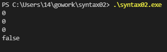
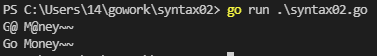
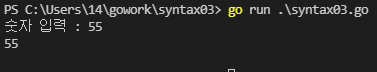
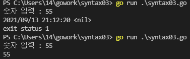
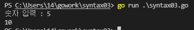
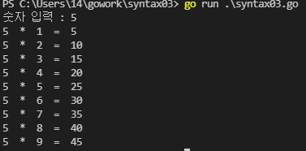
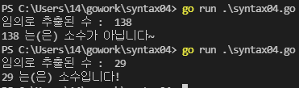

Go 기본 명령어 (2)
Go 개념정리
- Go 1.Go 기본 명령어(1)
- Go 2.Go 기본 명령어(2)
- Go 3.Go 함수
- Go 4.Go 패키지
- Go 5.Go 포인터
- Go 6.Go array 배열
- Go 7.Go slice 슬라이스
자료형(Type) 확인
package main
import (
"fmt"
"reflect"
)
func main() {
var c rune = '가'
a := 7
fmt.Printf("%T\n", c)
fmt.Printf("%T\n", a)
fmt.Println(reflect.TypeOf(c))
fmt.Println(reflect.TypeOf(a))
}

- fmt 모듈의 Printf 메소드 이용
- reflect 모듈의 TypeOf 메소드 이용
초기값 확인
package main
import (
"fmt"
)
func main() {
// zero value
var e string
var d bool
var c rune
var b float64
var a int
fmt.Println(a)
fmt.Println(b)
fmt.Println(c)
fmt.Println(d)
fmt.Println(e)
}

- int, float64, rune 등 숫자형 자료형은 초기값이 0
- bool 논리형 자료형은 초기값이 false
- string 문자형 자료형은 초기값이 ‘’
변수 선언 규칙
- 변수명은 영문자로 시작해야 됨
- 영문 대문자의 경우 다른 패키지에서 접근 가능
- 소문자로 시작하는 변수는 동일 패키지에서만 접근 가능
- 관례로는
- camelCase 방식을 사용
- index는 i로 줄여서 선언
문자열 변환
package main
import (
"fmt"
"strings"
)
func main() {
texts := "G@ M@ney~~"
fmt.Println(texts)
r := strings.NewReplacer("@","o")
newText := r.Replace(texts)
fmt.Println(newText)
}

NewReplacer()
- strings의 메소드로 파라미터는 (바꾸고싶은 문자열, 바꿀 문자열)
- 문자열 교체 인스턴스를 반환
Replace()
- 문자열 교체 인스턴스의 메소드로 파라미터는(문자열)
- 바뀐 문자열을 반환
문자열 입력
package main
import (
"bufio"
"fmt"
"os"
)
func main() {
fmt.Print("숫자 입력 : ")
rd := bufio.NewReader(os.Stdin)
in, _ := rd.ReadString('\n')
fmt.Println(in)
}

Stdin
- Standard Input/OutPut 표준 입출력 ex) 키보드
NewReader()
- reader 반환
ReadString()
- 파라미터 값이 오기 전까지 읽음
- 읽은 데이터, 에러 반환
_
- Go언어 특성상 쓰지않으면 에러를 발생
- _는 쓰지 않아도 됨
에러 출력
package main
import (
"bufio"
"fmt"
"log" // Fatal Function
"os"
)
func main() {
fmt.Print("숫자 입력 : ")
rd := bufio.NewReader(os.Stdin)
in, err := rd.ReadString('\n')
if err != nil { // 에러가 발생하면
log.Fatal(err)
}else{
fmt.Println(in)
}
}

- 위에 결과는 if 문이 없을 때
- 아래 결과는 if 문이 있을 때
- 에러가 없으면 err 에 nil 반환
Fatal()
- 에러를 출력후 프로그램 종료
문자열 정수 변환
package main
import (
"bufio"
"fmt"
"log" // Fatal Function
"os"
"strconv" // TrimSpace
"strings" // ParseInt
)
func main() {
fmt.Print("숫자 입력 : ")
rd := bufio.NewReader(os.Stdin)
in, err := rd.ReadString('\n')
if err != nil { // 에러가 발생하면
log.Fatal(err)
}
in = strings.TrimSpace(in)
dan, err := strconv.ParseInt(in, 10, 32)
if err != nil { // 에러가 발생하면
log.Fatal(err)
}
fmt.Println(dan * 2)
}

TrimSpace()
- 문자열 공백 제거
ParseInt()
- 파라미터 (문자열, 진수, 크기(bit))
- 문자열 정수로 변환 값, 에러 반환
구구단 예제
package main
import (
"bufio"
"fmt"
"log" // Fatal Function
"os"
"strconv" // TrimSpace
"strings" // ParseInt
)
func main() {
fmt.Print("숫자 입력 : ")
rd := bufio.NewReader(os.Stdin)
in, err := rd.ReadString('\n')
if err != nil { // 에러가 발생하면
log.Fatal(err)
}
in = strings.TrimSpace(in)
dan, err := strconv.ParseInt(in, 10, 32)
if err != nil { // 에러가 발생하면
log.Fatal(err)
}
for i := 1; i<10; i++ {
fmt.Println(dan, " * ", i, " = ", (int(dan)*i))
}
}

while
package main
import (
"bufio"
"fmt"
"log" // Fatal Function
"os"
"strconv" // TrimSpace
"strings" // ParseInt
)
func main() {
fmt.Print("숫자 입력 : ")
rd := bufio.NewReader(os.Stdin)
in, err := rd.ReadString('\n')
if err != nil { // 에러가 발생하면
log.Fatal(err)
}
in = strings.TrimSpace(in)
dan, err := strconv.Atoi(in)
if err != nil { // 에러가 발생하면
log.Fatal(err)
}
// 다른언어의 while문 구현
i := 1
for i < 10 {
fmt.Printf("%d * %d = %d\n", dan, i, (dan * i))
i++
}
}
- Go 언어에선 while문이 없음
- for 문이 while문 처럼 동작할 수 있음
rand
package main
import (
"fmt"
"math/rand"
"time" // seed 생성용 패키지
)
func main() {
// seed 설정
seed := time.Now().Unix()
rand.Seed(seed)
dice := rand.Intn(6) + 1
fmt.Println(dice)
}
- seed를 설정해 주지 않으면 동일한 값만 출력
Now()
- 현재 시간 반환
Intn()
- 파라미터 (끝값)
- 0 ~ 끝값 전값 의 난수 반환
난수 소수 판별 예제
package main
import (
"fmt"
"math/rand"
"time"
)
// 난수 추출된 수의 소수 판정 프로그램 v0.6
func main() {
seed := time.Now().Unix()
rand.Seed(seed)
isPrime := true
number := rand.Intn(150) + 2
// number = 21
fmt.Println("임의로 추출된 수 : ", number)
for i := 2; i < number; i++ {
if number % i == 0{
isPrime = false
break // 첫 번째 약수가 발견되면 반복문 즉시 종료
}
// fmt.Print(i, " ")
}
if isPrime {
fmt.Println(number ,"는(은) 소수입니다!")
}else {
fmt.Println(number ,"는(은) 소수가 아닙니다~")
}
}

- isPrime는 flag로 나누어 떨어지면 false
- 나누어 떨어지면 break 반복문 탈출